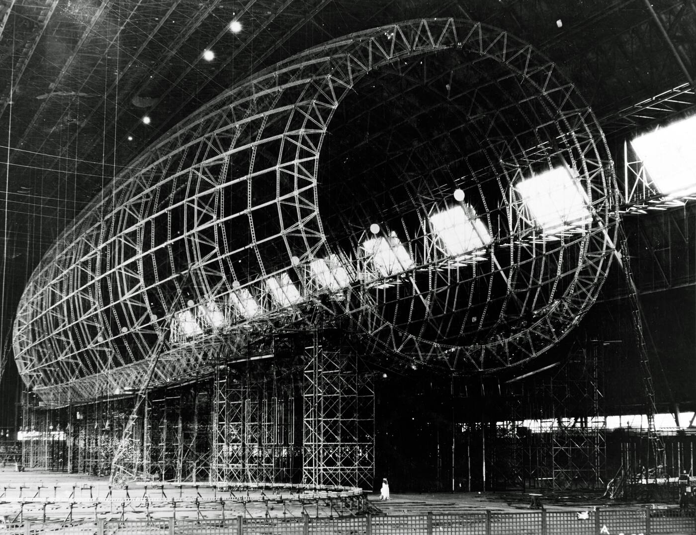
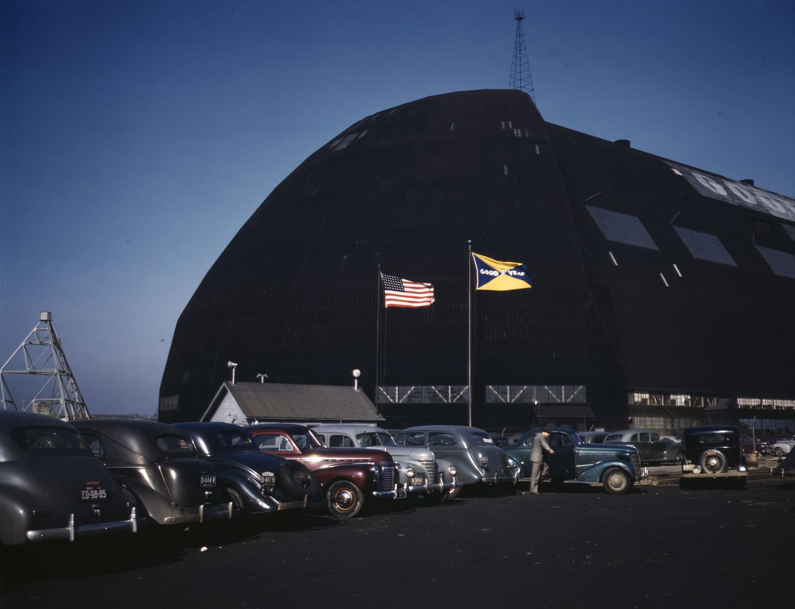
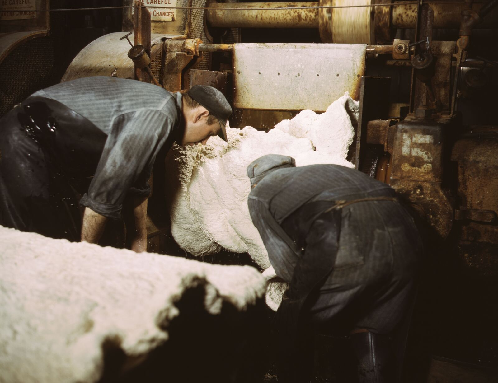
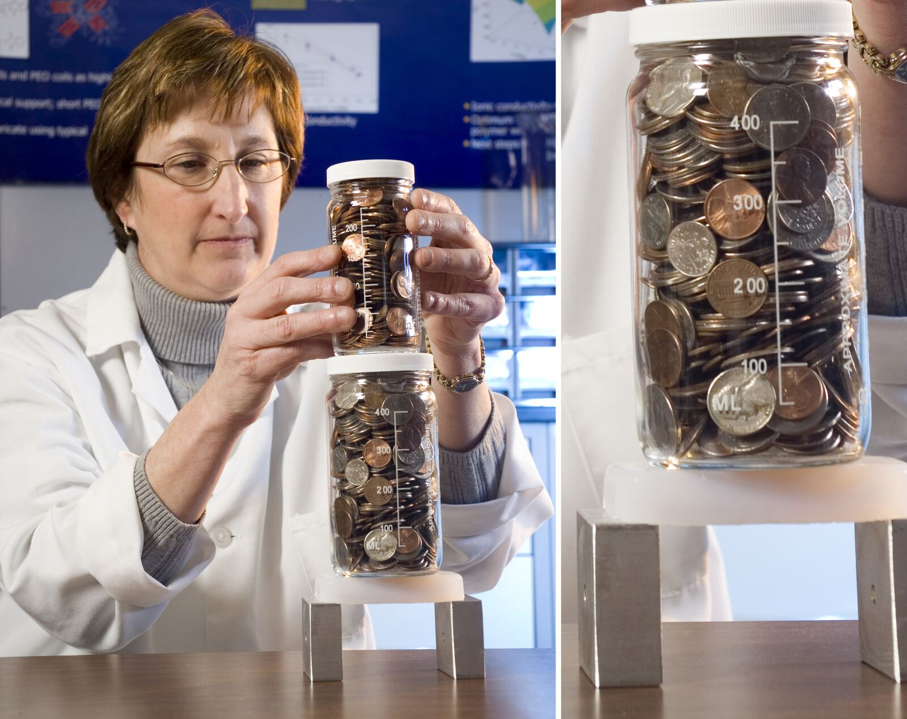

Two public records · 1898 to 2029
In October 2023 the federal government designated this region a Tech Hub. The public record holds 4 events in the 34 months before that and 68 delivered in the 34 months since. The century that explains why it landed in Akron is here too: 31 proven events, each with a named public source, the first dated 1898 and the last 2012. The 18 dates ahead are scheduled, not delivered.
Why here
Before there was a cluster to measure, there was a place. The NEO Polymer Wins register of the Polymer Industry Cluster (PIC) can prove 19 events that changed the region’s capacity and 12 scientific firsts, and every mark below opens its source. A discovery is a paper or a patent, never a product, and none of this is a cluster outcome; it is the reason the cluster is here.
No new proven row after 2012, and nothing at all after 2016
Each dot is one proven event, and further right is later. Each block is one era, and every era gets the same width however many years it ran, so distance across is not years. Top row: what changed the region’s capacity. Bottom row: what was first understood here. The sixth block holds no dot because no row is dated inside it; the 2 bars crossing it are events that began earlier and run on, the later of them to 2016.
This chart needs JavaScript. The same rows are in the table below it.
Source: the NEO Polymer Wins register, proven rows only. A row is proven when the register names a public source for it and claimed when it does not; 5 claimed rows are withheld rather than shown with a caveat, and 1 proven row records the same event as another in the same words and is merged into it rather than counted twice. As of 14 August 2026.
| Date | Event | Kind | What the register says | Source |
|---|
What it looked like
Five public-domain frames from the federal archives: the USS Akron under construction in the Goodyear-Zeppelin Airdock in 1930, three 1941 photographs of wartime rubber and fuel-tank work, and a polymer-reinforced aerogel at NASA Glenn holding two jars of coins.




Five photographs, all in the public domain: four US federal works from the Library of Congress and the Naval History and Heritage Command, one from NASA. No archive on this page holds a rights-cleared photograph of the scientific firsts, so none is shown.
The pace
One measure before the calendar: how often anything about this cluster entered the public record at all. 4 delivered events in the 34 months before the 23 October 2023 designation; 68 in the 34 months since. The two spans are the same length to within a day, so the seventeenfold gap is a change of pace.
4 delivered events in the 34 months before the designation; 68 since
Delivered public events per calendar year, 2021 through 13 August 2026. The 2023 bar splits at the 23 October designation, and the 68 counted here starts from that split. The calendar below starts earlier, at 1 January 2023, and its total is one higher, at 69.
This chart needs JavaScript. The counts it draws are in the paragraph above.
Source: the Polymer Industry Cluster’s (PIC) merged event inventory, public rows only, 2021 through 13 August 2026. Seventeenfold is 68 ÷ 4. The record was compiled after the designation, so the true before count can only be higher than four, and the true jump smaller than seventeen times. And the recent rows include the cluster’s own activity, presentations and reviews and milestones it ran, so the pace measures how fast the record fills, which is not the same thing as what got built.
The calendar
Everything the cluster has publicly done since the 2023 federal designation, on one calendar; the window opens that January and the designation lands in October. That is why this band counts 69 and the pace band above counts 68: the same rows, measured from two different starting dates. One dot per dated event, colored by its workstream, one of the five programme areas the cluster sorts its work into. Hollow dots are scheduled, not delivered. Every dot opens its date, organization and status.
The delivered record stops at Today; 18 hollow dots wait beyond it
Public events 2023 to 2029, one dot each, by workstream. Solid: delivered. Hollow: scheduled. Within a workstream a dot sits lower only to clear an earlier one, so height is spacing and not rank. Three vertical rules mark the designation, the $51M federal implementation grant that followed it, and December 2024, when the five company research awards began. The July 2026 award from the National Science Foundation carries its own label on a wide screen; on a narrow one, open its dot.
This timeline needs JavaScript. The full record is in the table below.
Source: PIC’s merged event inventory, public rows only; dates shown at their recorded precision, and an event recorded as a span sits at the start of that span. A quiet stretch means nothing was published, and the internal record of which dates slipped is deliberately not here. Opening the dot for the July 2026 NSF Engines award opens the award record behind it.
The company that moved
In September 2024 BioVerde CEO Dave Witte announced the company would move the bulk of its operations to Ohio, citing the $51M federal implementation grant. BioVerde’s own $11.1M bio‑based butadiene award began that December, the largest of the five company research awards that started with it.
The school that started early
Sixteen days after the designation, NovationSi and RD Abbott ran a polymer workshop at Barberton High School. Fourteen months later Barberton launched a K‑12 Polymer Pathway curriculum, backed by its community foundation.
The promises
Ten of the scheduled dates come due by the end of 2026, most of them first-year milestones on the federal awards. The other eight land between 2027 and 2029: the readiness target for the Polymer Pilot Facility, the capital project the awards fund, and seven award or project end dates. The five company R&D awards that began in December 2024 run to end dates between November 2027 and November 2029. Until then the public R&D record is progress milestones, and a milestone is not a product.
Source: PIC’s merged event inventory, scheduled rows only, as of 13 August 2026. A scheduled date is what the award record says is due, not a forecast.
The archive
Newest first, grouped by year. Some rows record a span of time rather than a single day; a span sorts on the first of its two dates, so the dates still run in order down the column. Every row in the default view is a delivered public event; expanding the table adds the scheduled rows, each tagged. The download carries a status column for every row.
| Short name | What it is |
|---|---|
| PIC | Polymer Industry Cluster, the organization whose record this page is. It sits inside the Greater Akron Chamber. |
| the designation | The federal Tech Hub designation the US Economic Development Administration gave the region on 23 October 2023. It confers a label and eligibility to compete for implementation money. It is not itself a grant, and 31 regions hold one. |
| NEO-SMART | A Case Western Reserve led team in the National Science Foundation’s Regional Innovation Engines program. It was a semifinalist in July 2025, a finalist that September, and was awarded in July 2026; each of those is a separate row. |
| PC3 | Polymer Cluster Coordinating Council, a regional convening body. |
| ODOD | Ohio Department of Development, the state agency. |
| ConxusNEO | A Northeast Ohio workforce intermediary; OMA is the Ohio Manufacturers’ Association. |
| GJC | The Good Jobs Challenge, a federal workforce grant program. |
| RFP | Request for proposals, the open call that starts a funding round. |
| PDLC | Polymer-dispersed liquid crystal, the switchable-glass material behind two of the Kent State discovery rows. |
| YoY | Year on year: this year’s figure against the same point last year. |
| Date | Event | Workstream | Organization |
|---|
·
Source: PIC’s merged event inventory, public rows only, as of 13 August 2026.
The century-old case is settled evidence; the three-year case still rests on 18 scheduled dates, and the R&D clocks among them run to November 2029.
69 delivered public events since the calendar opened on 1 January 2023, 68 of them since the October designation; 18 scheduled ahead. A scheduled date is a plan, and a plan is not evidence: the dots stay hollow until a public record fills them.